Introduction
When dealing with fast changing signals or long transmission distances the signal propogation time becomes very important. In these cases we must use a transmission line model for signal wires. The basic loss-less model is a 4-terminal model with a distributed capacitance and inductance along the line. This model can be described with the Telegrapher's Equation. Basically this describes the propogation of signals using a 1D wave equation, who's general solution describes the superposition of two waves traveling in opposite directions. To visualize this effect I thought I would try to solve the Telegrapher's Equation using a lumped/finite element method. The basic idea is to divide the transmission line into a network of series inductors and parallel capacitors. The voltages and currents through the transmission line can be solved for using a transient circuit simulator.
I know that there exists a simplified SPICE model which can be used to easily and quickly solved for the currents/voltages at the ends of the transmission line. However, this model does not accurately model what happens inside the transmission line. There are also methods for solving the type of Partial Differential Equation described by the Telegrapher's Equation numerically. I chose the finite element method mainly because I wanted to learn more about how SPICE solvers work internally. This circuit should allow me to do that with a semi-complicated circuit. I also wanted to visualize the signal propogation of a pulse which can't be done using the SPICE transmission line model.
Transmission Line Finite Element Model
For this simulation there are a few key details I want to capture:
- There is a pulsed input waveform with a given rise time and fall time.
- There is one signal source and one signal destination.
- There is a single series termination resistor near the signal source.
- There is a resistor at the end of the transmission line. This simulates the input stage of the target.
- The transmission line has a uniform inductance and capacitance, and is loss-less.
Figure 1 shows a representative circuit. This only shows 8 divisions of the transmission line, so the results won't be too accurate. However, as we divide the transmission line into more elements the simulation will become more accurate.
Primer on SPICE Implementation and Essential Theory/Approach
Before I can analyze the transmission line model, I need to get an understanding of how SPICE works internally since I'm going to be implementing a subset of its features. Specifically, the parts of SPICE I need to understand are:
- Analysis of Circuits with Modified Nodal Analysis
- Handling of reactive components (capacitors and inductors)
- Transient Analysis
Note that there is another approach for solving circuits which is the Sparse Tableau approach which I am not using. I'm not entirely sure about the exact detail differences, but it sounds like Sparse Tableau Analysis produces at larger sparse matrix compared to Modified Nodal Analysis. SPICE internally uses a Modified Nodal Analysis so I'm going to investigate that approach.
Modified Nodal Analysis
Dr. Cheever provides a nice explanation of the Modified Nodal Analysis algorithm. The basic idea is to define an additional unknown current for each voltage source. Additional equations are added which refer unknown nodal voltages to the source voltages. Cheever also provides a nice algorithm for implementing MNA. There are no dependent sources so there is no need provide an extension for these, but the extension is quite easy to do. See this page by Montagne for an explanation on how to do it.
Transients
Transients are remarkably simple to handle. The idea is to split the simulation time into discrete time steps and perform each simulation step in a "semi-DC" fashion.
Capacitors and Inductors
We can calculate the required parameters by approximating the voltage-current equations numerically. I'm going to use trapazoidal approximations. First, for capacitors:
Hmm, that looks suspiciously like the circuit in figure 2, where .
We could replace every capacitor instantaneously with that circuit, but to simplify the problem one step further by finding the Norton equivalent circuit.
Next, let's work on inductors:
This looks very similar to the circuit in figure 3, where . Again, to simplify the circuit we'll use a Norton equivalent circuit.
Putting it Together (First Test)
For this project my eventual goal is to implement the solver in Javascript. This way I can give something users can interactively play with and see how the model reacts to different parameters. It will also give me a reason to learn how to create animations with Javascript. Note that I won't be implementing a front-end generic parser so unfortunately the circuit build code will be specific to this model. Of course, if you really need a generic circuit solver there are several available (including a few good ones are free) which will work much better. For this first test, I'm going to use Python and the Numpy/Scipy routines to check for stability and any problems which might occur.
Building The System of Equations
Before thinking about which solver to use, let's take a look at a small example matrix and see what assumptions and simplifications we can make with the solver. Let's take a 4 element system.
The system of equations for this model is:
Note that G denotes the conductance of an element and is the inverse of resistance.
A few things we can observe right away:
- The coefficients matrix is symmetrical.
- The coefficients matrix is constant for all time steps (assuming constant passive properties).
- The coefficients matrix is sparse.
Whatever solver we implement ideally will take advantage of these properties.
Simulation Implementation
To get an easily solvable matrix, the first step I'm going to take is swapping the first and last row. I also noticed is that IS can be calculated independently of all the nodal voltages. Since I'm not interested in IS at this time, I'm going to drop it completely from the system. Note that IS can be calculated directly later if we did want to know what it is.
We now have a banded matrix, and this can be easily solved. The idea is to calculate the upper triangular matrix with non-zero diagonal elements of the LU decomposition. In theory I could calculate and store the lower triangular matrix, too, but as it turns out this isn't necessary. As long as is constant, I don't have to re-compute the LU matrix pair. As a further optimization, I only need to track the diagonals of the upper triangular matrix. The only other elements are all -GL. In the time step simulation portion, I need to calculate the right-hand-side vector. This is done by using a quick forward substitution with the lower matrix (which we didn't track, but don't need to). The nodal voltages are then calculated with back-substitution with the upper triangular matrix. If this sounds familiar, that's because this is the basic strategy for solving a system of equations using LU decomposition. Once we know the nodal voltages we can calculate the current flowing through each component. Here's a SciPy implementation:
1 2 3 4 5 6 7 8 9 10 11 12 13 14 15 16 17 18 19 20 21 22 23 24 25 26 27 28 29 30 31 32 33 34 35 36 37 38 39 40 41 42 43 44 45 46 47 48 49 50 51 52 53 54 55 56 57 58 59 60 61 62 63 64 65 66 67 68 69 70 71 72 73 74 75 76 77 78 79 80 81 82 83 84 85 86 87 88 89 90 91 92 93 94 95 96 97 98 99 100 101 102 103 104 105 106 107 108 109 | from numpy import *def pulse(t, Voff, Von, tRise, tFall, tPeriod, tOn): ''' Calculates the output voltage of a pulse source ''' t = t % tPeriod Vs = Voff if (t < tRise): Vs = (Von - Voff) * t / tRise + Voff elif (t < tRise + tOn): Vs = Von elif (t < tRise + tOn + tFall): Vs = (Voff - Von) * (t-tRise-tOn) / tFall + Von return Vsdef simStep(G1, G2, GC, GL, dt, step, elems, Voff, Von, tRise, tFall, tPeriod, tOn, diags, V, I): ''' Simulates one time step ''' # source voltage Vs = pulse(step * dt, Voff, Von, tRise, tFall, tPeriod, tOn) # calculate norton currents for caps/inductors INort = zeros(2 * elems) for i in range(0, elems): # trapz # inductor INort[2 * i] = -((V[i] - V[i + 1]) * GL + I[2 * i]) # capacitor INort[2 * i + 1] = V[i+1] * GC + I[2 * i + 1] # backwards euler # inductor #INort[2 * i] = -I[2 * i] # capacitor #INort[2 * i + 1] = V[i+1] * GC # build B vector Bvec = zeros(elems + 1) Bvec[0] = INort[0] + G1 * Vs for i in range(1, elems): Bvec[i] = INort[2*i - 1] + INort[2*i] - INort[2*i - 2] + GL * Bvec[i - 1] / diags[i - 1] Bvec[elems] = INort[2*elems - 1] - INort[2 * elems - 2] + GL * Bvec[elems - 1] / diags[elems - 1] # back-sub for voltages Vnew = zeros(elems + 1) Vnew[elems] = Bvec[elems] / diags[elems] for i in range(elems - 1, -1, -1): Vnew[i] = (Bvec[i] + GL * Vnew[i+1]) / diags[i] # calculate currents through inductors/caps #Inew = zeros(2 * elems) for i in range(0, elems): # trapz # inductor #Inew[2*i] = GL * (Vnew[i] - Vnew[i+1] + V[i] - V[i+1]) + I[2*i] I[2*i] = GL * (Vnew[i] - Vnew[i+1] + V[i] - V[i+1]) + I[2*i] # capacitor #Inew[2*i + 1] = GC * (Vnew[i + 1] - V[i + 1]) - I[2*i + 1] I[2*i + 1] = GC * (Vnew[i + 1] - V[i + 1]) - I[2*i + 1] # backwards euler # inductor #Inew[2 * i] = GL * (Vnew[i] - Vnew[i+1]) + I[2*i] # capacitor #Inew[2 * i + 1] = GC * (Vnew[i + 1] + V[i + 1]) return Vnew, Iif __name__ == '__main__': elems = 256 numPlots = 4 Z = 100 tDelay = 5e-9 C = tDelay / Z / elems L = Z ** 2 * C termScale = 1 R1 = Z * termScale R2 = 1e6 dt = tDelay / 2000 Voff = 0 Von = 1 tRise = 1e-9 tFall = tRise tPeriod = 1000e-9 tOn = tPeriod / 2 - tRise # build simulation G1 = 1 / R1 G2 = 1 / R2 # trapz GC = 2 * C / dt GL = dt / (2 * L) # backward euler #GC = C / dt #GL = dt / L # diagonal divisors diags = zeros(elems + 1) diags[0] = G1 + GL for i in range(1, elems): diags[i] = 2 * GL + GC - GL * GL / diags[i - 1] diags[elems] = GC + GL + G2 - GL * GL / diags[elems - 1] V = zeros(elems + 1) I = zeros(2 * elems) maxSteps = numPlots * int(ceil(tDelay / dt)) for step in range(0, maxSteps): V, I = simStep(G1, G2, GC, GL, dt, step, elems, Voff, Von, tRise, tFall, tPeriod, tOn, diags, V, I) |
For those interested I also have the Backward Euler method implemented, it's just commented out. The code can be easily swapped to use either integration method. Luckily the code was implemented in such a way that it's very easy to change the integrator.
Some Sample plots
There are 3 main situations I wanted to look at: the terminator being too small, larger, and just right. As a fore-warning, sorry if the page seems like it goes on for a long time. I wanted to use a slideshow/carousel to display the time progression, but I couldn't figure out an easy way to accomplish this.
The input signal for all tests is a 1ns linear rise from 0V to 1V. During my testing I found that it's primarily the rise time which dictates the response behavior, assuming that pulse on time is greater than 2 times the propogation time. The signal source is on the left side (x = 0) and the target is on the right (x = 1). The different lines demonstrate the voltage propogation wave along the line, with the more solid lines occuring more recently. The simulation was run with 256 elements and 2000 time steps per rise time period.
The transmission line is lossless, has 100ohm equivalent impedance, and a 5ns propogation delay time.
Case 1: Terminator is too Small
For this test I used . This allows too much energy/current to be propogated down the transmission line. When this energy reaches the high impedance of the target, it gets reflected back. Until the extra energy can be dissipated. This process can take quite a while, resulting in many reflections along the line. This is an underdamped response.
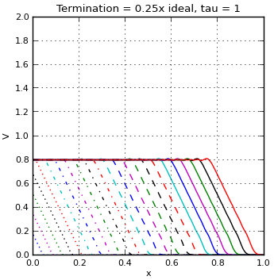 Figure 5. Initial Rise |
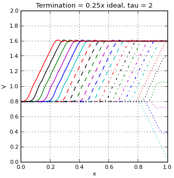 Figure 6. 1st reflection, propogation to source |
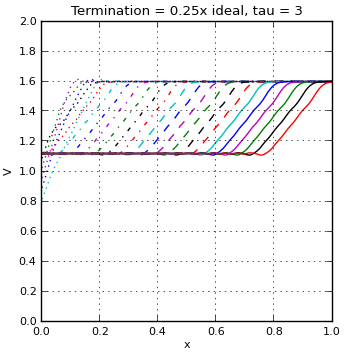 Figure 7. 2nd reflection, propogation to target |
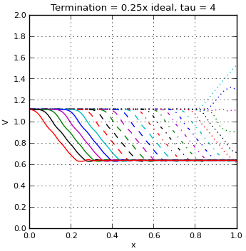 Figure 8. 3rd reflection, propogation to source |
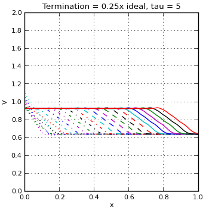 Figure 9. 4th reflection, propogation to target |
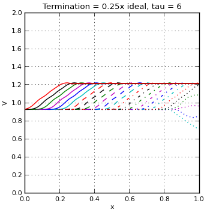 Figure 10. 5th reflection, propogation to source |
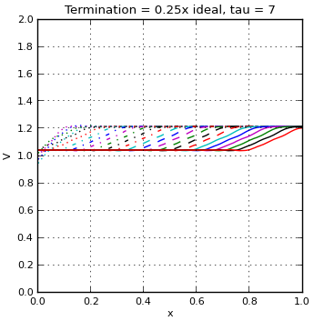 Figure 11. 6th reflection, propogation to target |
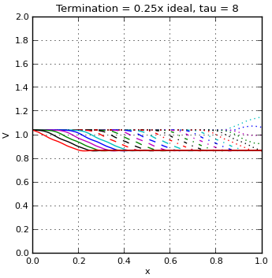 Figure 12. 7th reflection, propogation to source |
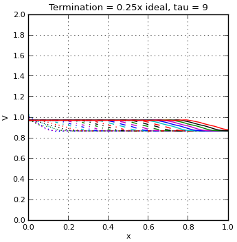 Figure 13. 8th reflection, propogation to target |
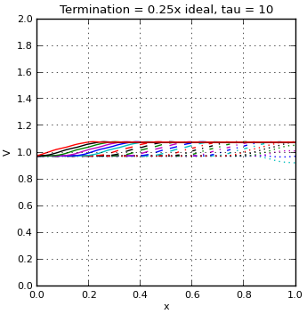 Figure 14. 9th reflection, propogation to source |
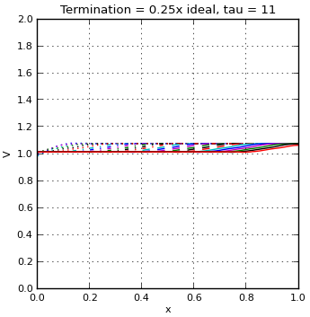 Figure 15. 10th reflection, propogation to target |
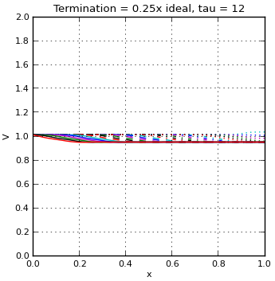 Figure 16. 11th reflection, propogation to source |
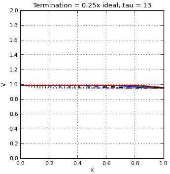 Figure 17. 12th reflection, propogation to target |
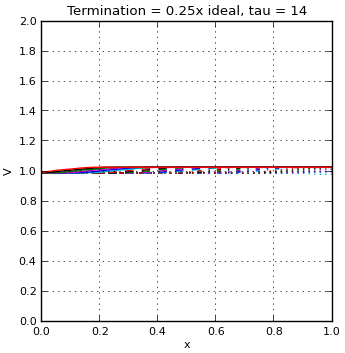 Figure 18. 13th reflection, propogation to source |
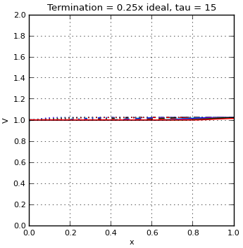 Figure 19. 14th reflection, propogation to target |
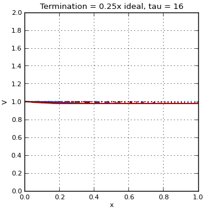 Figure 20. 15th reflection, propogation to source |
Case 2: Terminator is too Large
For this test I used . This restricts the amount of energy/current to be propogated down the transmission line too much. When this energy reaches the high impedance of the target, it gets reflected back. Until the extra energy can be dissipated. This process can take quite a while, resulting in many reflections along the line. This is an overdamped response.
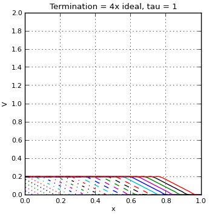 Figure 21. Initial Rise |
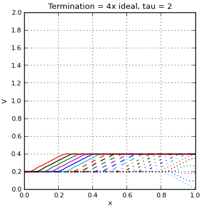 Figure 22. Reflection, propogation to source |
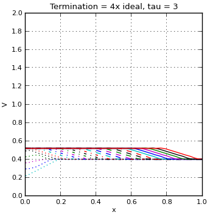 Figure 23. Energy injection, propogation to target |
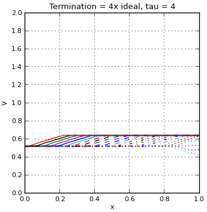 Figure 24. Reflection, propogation to source |
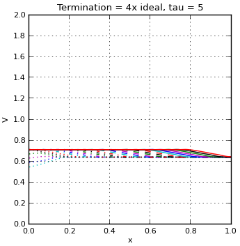 Figure 25. Energy injection, propogation to target |
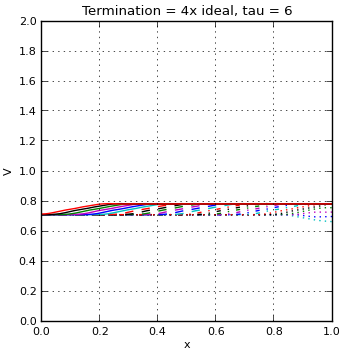 Figure 26. Reflection, propogation to source |
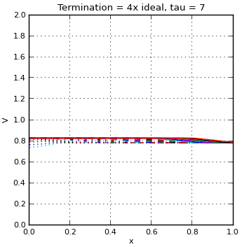 Figure 27. Energy injection, propogation to target |
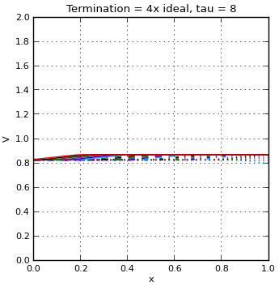 Figure 28. Reflection, propogation to source |
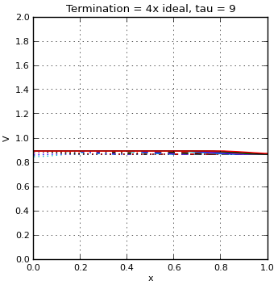 Figure 29. Energy injection, propogation to target |
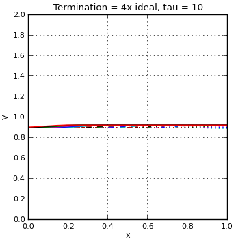 Figure 30. Reflection, propogation to source |
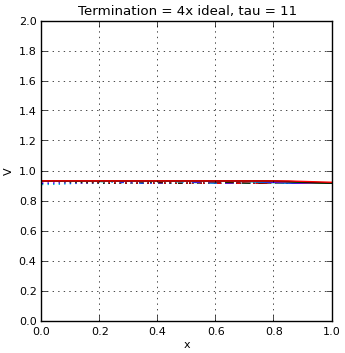 Figure 31. Energy injection, propogation to target |
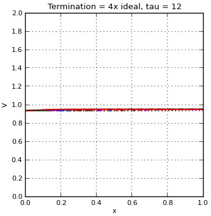 Figure 32. Reflection, propogation to source |
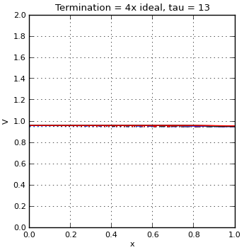 Figure 33. Energy injection, propogation to target |
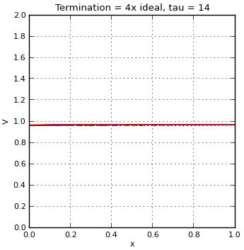 Figure 34. Reflection, propogation to source |
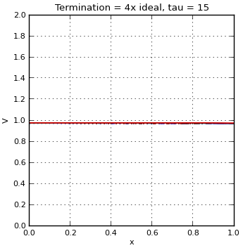 Figure 35. Energy injection, propogation to target |
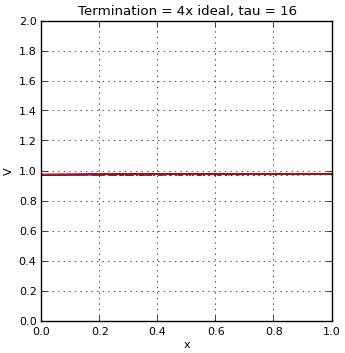 Figure 36. Reflection, propogation to source |
Case 3: Ideal Terminator
For this test I used . The correct amount of energy/current to be propogated down the transmission line. When this energy reaches the high impedance of the target, it gets reflected back. However, this is the exact level as the source so there is very little to no ringing. This is the critically damped case and why for high frequencies and/or long signal lines you want to match the terminator resistance to the transmission line impedance.
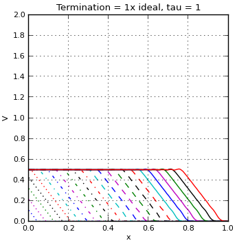 Figure 37. Initial Rise |
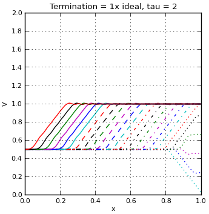 Figure 38. 1st reflection, propogation to source |
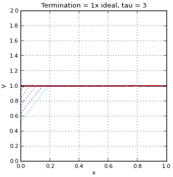 Figure 39. Essentially no ringing, line is more or less completely at target voltage. |
Conclusion
Now that I know the theory is sound, I'm going to work on creating a Javascript widjet which can have parameters dynamically modified to test out different cases. There are probably very few practical uses for this because generally only the voltage/current relationship at the edges is desired. As I stated in my intro, there is a different SPICE model for transmission lines which captures this without using hundreds of components. However, I have found it useful to visualize what happens to the signal as it propogates down the line. This also goes into the details of circuit simulators, and in the future I want to use this to learn more about writing Javascript programs which have to deal with graphics. This also demonstrates why impedance matching is important for fast signals or long transmission lines.
No comments :
Post a Comment
Links to this post
Create a Link